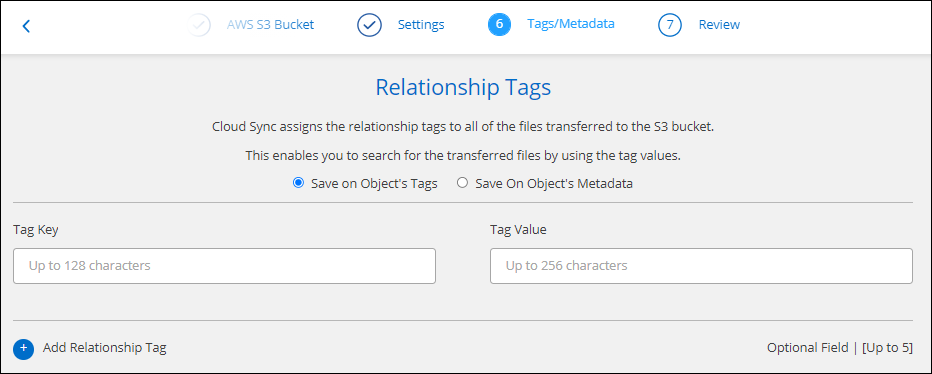

Versionshinweise
Versionshinweise
Erstellung von Synchronisierungsbeziehungen
 Änderungen vorschlagen
Änderungen vorschlagen
Wenn Sie eine Synchronisierungsbeziehung erstellen, kopiert der BlueXP Kopier- und Synchronisierungsservice Dateien vom Quell- zum Zielsystem. Nach der ersten Kopie synchronisiert der Service alle 24 Stunden alle geänderten Daten.
Bevor Sie einige Arten von Synchronisierungsbeziehungen erstellen können, müssen Sie zunächst eine Arbeitsumgebung in BlueXP erstellen.
Erstellen von Synchronisierungsbeziehungen für bestimmte Arbeitsumgebungen
Wenn Sie Synchronisierungsbeziehungen für eines der folgenden Elemente erstellen möchten, müssen Sie zuerst die Arbeitsumgebung erstellen oder ermitteln:
-
Amazon FSX für ONTAP
-
Azure NetApp Dateien
-
Cloud Volumes ONTAP
-
ONTAP-Cluster vor Ort
-
Schaffen oder ermitteln Sie die Arbeitsumgebung.
-
Wählen Sie Leinwand.
-
Wählen Sie eine Arbeitsumgebung aus, die einem der oben aufgeführten Typen entspricht.
-
Wählen Sie das Aktionsmenü neben Synchronisieren.

-
Wählen Sie Daten von diesem Standort oder Daten zu diesem Standort synchronisieren und folgen Sie den Anweisungen, um die Synchronisierungsbeziehung einzurichten.
Erstellung anderer Arten von Synchronisierungsbeziehungen
Verwenden Sie diese Schritte, um Daten zu einem anderen unterstützten Storage-Typ als Amazon FSX für ONTAP, Azure NetApp Files, Cloud Volumes ONTAP oder On-Premises-ONTAP-Cluster zu synchronisieren. Die folgenden Schritte zeigen ein Beispiel, wie eine Synchronisierungsbeziehung von einem NFS-Server zu einem S3-Bucket eingerichtet wird.
-
Wählen Sie in BlueXP Sync aus.
-
Wählen Sie auf der Seite * Synchronisierungsbeziehung definieren* eine Quelle und ein Ziel aus.
Die folgenden Schritte zeigen ein Beispiel für das Erstellen einer Synchronisierungsbeziehung von einem NFS-Server zu einem S3-Bucket.

-
Geben Sie auf der Seite NFS Server die IP-Adresse oder den vollqualifizierten Domänennamen des NFS-Servers ein, den Sie mit AWS synchronisieren möchten.
-
Folgen Sie auf der Seite Data Broker Group den Aufforderungen zur Erstellung einer virtuellen Maschine für den Datenvermittler in AWS, Azure oder Google Cloud Platform oder zur Installation der Datenvermittler-Software auf einem vorhandenen Linux-Host.
Weitere Informationen finden Sie auf den folgenden Seiten:
-
Wählen Sie nach der Installation des Datenbrokers Weiter aus.

-
Wählen Sie auf der Seite Directories ein Verzeichnis oder Unterverzeichnis auf oberster Ebene aus.
Wenn BlueXP copy and Sync die Exporte nicht abrufen kann, wählen Sie Export manuell hinzufügen und geben den Namen eines NFS-Exports ein.

Wenn Sie mehr als ein Verzeichnis auf dem NFS-Server synchronisieren möchten, müssen Sie nach Abschluss der Synchronisierung weitere Synchronisierungsbeziehungen erstellen. -
Wählen Sie auf der Seite AWS S3 Bucket einen Bucket aus:
-
Drill-down zum Auswählen eines vorhandenen Ordners innerhalb des Buckets oder zum Auswählen eines neuen Ordners, den Sie innerhalb des Buckets erstellen.
-
Wählen Sie zur Liste hinzufügen, um einen S3-Bucket auszuwählen, der nicht mit Ihrem AWS-Konto verknüpft ist. "Spezifische Berechtigungen müssen auf den S3-Bucket angewendet werden".
-
-
Richten Sie auf der Seite Bucket Setup den Bucket ein:
-
Legen Sie fest, ob die S3-Bucket-Verschlüsselung aktiviert und dann einen AWS KMS-Schlüssel ausgewählt werden soll, den ARN eines KMS-Schlüssels eingeben oder die AES-256-Verschlüsselung auswählen soll.
-
Wählen Sie eine S3-Storage-Klasse aus. "Zeigen Sie die unterstützten Speicherklassen an".

-
-
legen Sie auf der Seite Settings fest, wie Quelldateien und Ordner synchronisiert und am Zielspeicherort verwaltet werden:
- Zeitplan
-
Wählen Sie einen wiederkehrenden Zeitplan für zukünftige Synchronisierungen aus oder deaktivieren Sie den Synchronisationsplan. Sie können eine Beziehung planen, um Daten bis zu alle 1 Minute zu synchronisieren.
- Sync Timeout
-
Definieren Sie, ob die BlueXP Kopier- und Synchronisierungsfunktion die Datensynchronisierung beenden soll, wenn die Synchronisierung nicht in der angegebenen Anzahl von Minuten, Stunden oder Tagen abgeschlossen wurde.
- Benachrichtigungen
-
Ermöglicht Ihnen die Wahl, ob Sie BlueXP Benachrichtigungen zum Kopieren und Synchronisieren im Benachrichtigungscenter von BlueXP erhalten möchten. Benachrichtigungen für erfolgreiche Datensynchronisation, fehlerhafte Datensynchronisation und stornierte Datensynchronisierungen sind möglich.
- Wiederholungen
-
Definieren Sie, wie oft BlueXP Kopier- und Synchronisierungsvorgänge versuchen soll, eine Datei zu synchronisieren, bevor sie übersprungen wird.
- Kontinuierliche Synchronisierung
-
Nach der anfänglichen Datensynchronisierung überwacht BlueXP Kopier- und Synchronisierungsfunktion Änderungen am Quell-S3-Bucket oder Google Cloud Storage und synchronisiert kontinuierlich alle Änderungen am Ziel, sobald sie auftreten. Es ist nicht erforderlich, die Quelle in geplanten Intervallen erneut zu scannen.
Diese Einstellung ist nur verfügbar, wenn eine Synchronisierungsbeziehung erstellt wird und wenn Daten von einem S3-Bucket oder Google Cloud Storage zu Azure Blob Storage, CIFS, Google Cloud Storage, IBM Cloud Object Storage, NFS, S3, Und StorageGRID * oder* von Azure Blob Storage auf Azure Blob Storage, CIFS, Google Cloud Storage, IBM Cloud Object Storage, NFS und StorageGRID.
Wenn Sie diese Einstellung aktivieren, wirkt sich dies auf andere Funktionen wie folgt aus:
-
Der Synchronisierungszeitplan ist deaktiviert.
-
Die folgenden Einstellungen werden auf die Standardwerte zurückgesetzt: Sync Timeout, kürzlich geänderte Dateien und Änderungsdatum.
-
Wenn S3 die Quelle ist, ist der Filter nach Größe nur für kopierende Ereignisse aktiv (nicht bei Löschereignissen).
-
Nachdem die Beziehung erstellt wurde, können Sie die Beziehung nur beschleunigen oder löschen. Sie können die Synchronisierung nicht abbrechen, Einstellungen ändern oder Berichte anzeigen.
Es ist möglich, eine Continuous Sync-Beziehung mit einem externen Bucket zu erstellen. Gehen Sie dazu wie folgt vor:
-
Für das externe Bucket-Projekt gehen Sie in die Google Cloud-Konsole.
-
Gehen Sie zu Cloud Storage > Einstellungen > Cloud Storage Service Account.
-
Aktualisieren Sie die Datei local.json:
{ "protocols": { "gcp": { "storage-account-email": <storage account email> } } } -
Starten Sie den Daten-Broker neu:
-
Sudo pm2 Alle stoppen
-
Sudo pm2 Alle starten
-
-
Erstellen Sie eine Continuous Sync-Beziehung mit dem relevanten externen Bucket.
Ein Daten-Broker, der zur Erstellung einer kontinuierlichen Synchronisierungsbeziehung mit einem externen Bucket verwendet wird, kann in seinem Projekt keine weitere Continuous Sync-Beziehung zu einem Bucket erstellen.
-
-
- Vergleich Von
-
Wählen Sie, ob die BlueXP Kopie und Synchronisierung bestimmte Attribute vergleichen soll, wenn Sie feststellen, ob sich eine Datei oder ein Verzeichnis geändert hat und erneut synchronisiert werden soll.
Selbst wenn Sie diese Attribute deaktivieren, vergleicht BlueXP Kopier- und Synchronisierungsfunktion die Quelle immer noch mit dem Ziel, indem Pfade, Dateigrößen und Dateinamen geprüft werden. Falls Änderungen vorliegen, werden diese Dateien und Verzeichnisse synchronisiert.
Sie können die BlueXP Kopier- und Synchronisierungsfunktion für den Vergleich der folgenden Attribute aktivieren bzw. deaktivieren:
-
Mtime: Die letzte geänderte Zeit für eine Datei. Dieses Attribut ist für Verzeichnisse nicht gültig.
-
Uid, gid und Mode: Berechtigungsflaggen für Linux.
-
- Für Objekte kopieren
-
Aktivieren Sie diese Option zum Kopieren von Objekt-Storage-Metadaten und -Tags. Wenn ein Benutzer die Metadaten an der Quelle ändert, kopiert und synchronisiert BlueXP dieses Objekt bei der nächsten Synchronisierung. Wenn aber ein Benutzer die Tags an der Quelle ändert (und nicht die Daten selbst), kopiert und synchronisiert BlueXP das Objekt nicht in der nächsten Synchronisierung.
Sie können diese Option nicht bearbeiten, nachdem Sie die Beziehung erstellt haben.
Das Kopieren von Tags wird in Synchronisierungsbeziehungen unterstützt, einschließlich Azure Blob oder einem S3-kompatiblen Endpunkt (S3, StorageGRID oder IBM Cloud Objekt-Storage) als Ziel.
Das Kopieren von Metadaten wird durch „Cloud-to-Cloud“-Beziehungen zwischen folgenden Endpunkten unterstützt:
-
AWS S3
-
Azure Blob
-
Google Cloud Storage
-
IBM Cloud Objekt-Storage
-
StorageGRID
-
- Kürzlich geänderte Dateien
-
Wählen Sie diese Option aus, um Dateien auszuschließen, die vor der geplanten Synchronisierung zuletzt geändert wurden.
- Dateien auf Quelle löschen
-
Wählen Sie diese Option, um Dateien vom Quellspeicherort zu löschen, nachdem BlueXP die Dateien kopiert und synchronisiert hat. Diese Option schließt das Risiko eines Datenverlusts ein, da die Quelldateien nach dem Kopieren gelöscht werden.
Wenn Sie diese Option aktivieren, müssen Sie auch einen Parameter in der Datei local.json im Datenvermittler ändern. Öffnen Sie die Datei und aktualisieren Sie sie wie folgt:
{ "workers":{ "transferrer":{ "delete-on-source": true } } }Nach dem Aktualisieren der Datei local.json sollten Sie einen Neustart durchführen:
pm2 restart all. - Dateien auf Ziel löschen
-
Wählen Sie diese Option aus, um Dateien vom Zielspeicherort zu löschen, wenn sie aus der Quelle gelöscht wurden. Standardmäßig werden keine Dateien vom Zielspeicherort gelöscht.
- Dateitypen
-
Definieren Sie die Dateitypen, die in die einzelnen Synchronisierungen einbezogen werden sollen: Dateien, Verzeichnisse, symbolische Links und harte Links.
Harte Links sind nur für ungesicherte NFS zu NFS Beziehungen verfügbar. Benutzer sind auf einen Scannerprozess und eine Scannerparallelität beschränkt, und Scans müssen von einem Stammverzeichnis aus ausgeführt werden. - Dateierweiterungen ausschließen
-
Geben Sie die regex- oder Dateierweiterungen an, die von der Synchronisierung ausgeschlossen werden sollen, indem Sie die Dateierweiterung eingeben und Enter drücken. Geben Sie beispielsweise log oder .log ein, um *.log-Dateien auszuschließen. Für mehrere Erweiterungen ist kein Trennzeichen erforderlich. Das folgende Video enthält eine kurze Demo:
Regex oder reguläre Ausdrücke unterscheiden sich von Wildcards oder Glob-Ausdrücken. Diese Funktion only funktioniert mit regex. - Verzeichnisse Ausschließen
-
Geben Sie maximal 15 regex oder Verzeichnisse an, die von der Synchronisierung ausgeschlossen werden sollen, indem Sie ihren Namen oder das Verzeichnis Full Path eingeben und Enter drücken. Die Verzeichnisse .Copy-Offload, .Snapshot, ~Snapshot sind standardmäßig ausgeschlossen.
Regex oder reguläre Ausdrücke unterscheiden sich von Wildcards oder Glob-Ausdrücken. Diese Funktion only funktioniert mit regex. - Dateigröße
-
Wählen Sie, ob alle Dateien unabhängig von ihrer Größe oder nur Dateien in einem bestimmten Größenbereich synchronisiert werden sollen.
- Änderungsdatum
-
Wählen Sie alle Dateien unabhängig vom letzten Änderungsdatum aus, Dateien, die nach einem bestimmten Datum, vor einem bestimmten Datum oder zwischen einem bestimmten Zeitraum geändert wurden.
- Erstellungsdatum
-
Wenn ein SMB-Server die Quelle ist, können Sie mit dieser Einstellung Dateien synchronisieren, die nach einem bestimmten Datum, vor einem bestimmten Datum oder zwischen einem bestimmten Zeitraum erstellt wurden.
- ACL – Access Control List
-
Kopieren Sie nur ACLs, nur Dateien oder ACLs und Dateien von einem SMB-Server, indem Sie eine Einstellung aktivieren, wenn Sie eine Beziehung erstellen oder nachdem Sie eine Beziehung erstellt haben.
-
Wählen Sie auf der Seite Tags/Metadaten, ob ein Key-Value-Paar als Tag auf allen Dateien gespeichert werden soll, die auf den S3-Bucket übertragen werden, oder um ein Metadaten-Key-Value-Paar auf allen Dateien zuzuweisen.


Diese Funktion ist auch zur Synchronisierung von Daten mit StorageGRID und IBM Cloud Object Storage verfügbar. Für Azure und Google Cloud Storage ist nur die Metadatenoption verfügbar. -
Überprüfen Sie die Details der Synchronisierungsbeziehung und wählen Sie dann Beziehung erstellen.
Ergebnis
Die Kopier- und Synchronisierungsfunktion von BlueXP beginnt mit der Synchronisierung von Daten zwischen Quelle und Ziel.
Erstellung von Synchronisierungsbeziehungen aus der BlueXP Klassifizierung
Die BlueXP Kopier- und Synchronisierungsfunktion ist in die BlueXP Klassifizierung integriert. Innerhalb der BlueXP Klassifizierung können Sie die Quelldateien auswählen, die Sie mithilfe der BlueXP Kopie und Synchronisierung mit einem Zielspeicherort synchronisieren möchten.
Nachdem Sie eine Datensynchronisierung aus der BlueXP Klassifizierung initiiert haben, sind alle Quellinformationen in einem Schritt enthalten und müssen nur noch einige wichtige Details eingeben. Anschließend wählen Sie den Zielspeicherort für die neue Synchronisierungsbeziehung aus.